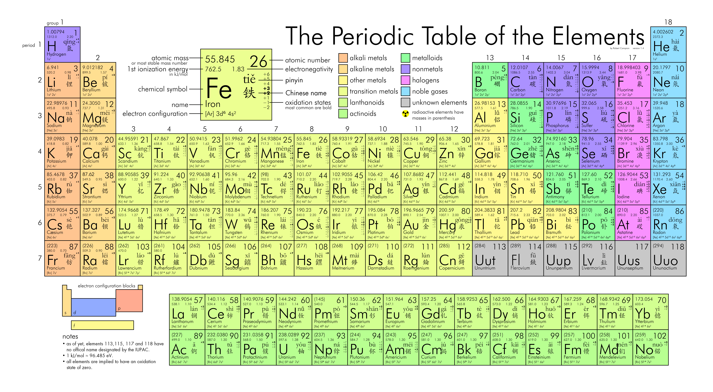

6.元素周期律
第 层最多能容纳的电子数？
电子层中，此外层最多电子数不超过 18 个，倒数第三层不超过 [1]32 个。
电子层符号？ KLMNOP...
元素周期表中，短周期包括？ 第一二三周期，1~18 号元素。
元素周期表中，副族有几个？ 7 个，IB~VIIB
判断：元素周期表中，副族只包括长周期元素。 正确。
元素周期表中，VIII 族指的是？ 第 8、9、10 三个纵列的元素。
元素周期表中，0 族指的是？ 稀有气体元素，位于 18 纵列。
判断：过渡元素都是金属元素。 正确。
原子核中无中子的元素？
形成化合物种类最多的元素？
化学键：相邻原子（或原子团）之间发生强烈的相互作用。
化学键分为？ 离子键、共价键、金属键。
离子键：阴阳离子通过静电作用形成的化学键。
共价键：原子间通过共用电子对形成的化学键。
如何判断极性分子？ 分子结构对称，则为非极性。
极性大的分子，熔沸点一般 较高。
分子间作用力最常见的两类？ 范德华力、氢键。
比较范德华力、氢键、化学键的强弱。 范德华力 < 氢键 < 化学键。
范德华力越强，物质熔沸点越高。
氢键何时考虑？ N O F
熔剂和溶质分子形成氢键，则溶解度上升。
判断：乙醇分子和水分子间可以形成氢键。 正确。
判断：氨气沸点高于 正确。
判断：卤素单质和卤素氢化物的熔沸点均随着相对分子质量的增大而升高。 错误， 氢键。
